Santé globale et One Health
Pour qui
Acteurs de la santé humaine, animale et environnementale
Pour quoi
Prévention, accès aux soins, santé environnementale, préparation aux crises sanitaires
En savoir plus→
Nous aidons les organisations engagées sur les biens communs (santé globale, médico-social, numérique, transition écologique...) à ne plus être oubliées des réformes et à peser sur les décisions publiques.
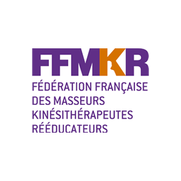
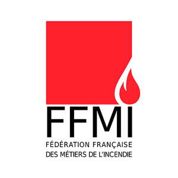
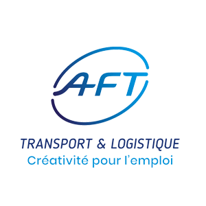
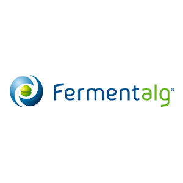
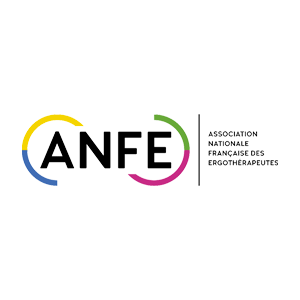
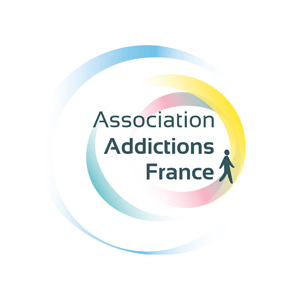
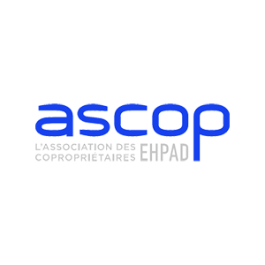
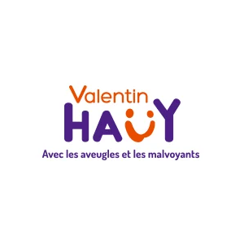
Nous travaillons avec des fédérations, syndicats, associations, mutuelles et opérateurs qui défendent des biens communs et souhaitent s'imposer comme forces de proposition légitimes.
Pour qui
Acteurs de la santé humaine, animale et environnementale
Pour quoi
Prévention, accès aux soins, santé environnementale, préparation aux crises sanitaires
Pour qui
Acteurs du handicap, gestionnaires d’ESMS, collectifs pour l’accessibilité
Pour quoi
Accessibilité universelle, effectivité des droits, simplification des parcours de vie
Pour qui
Opérateurs du grand âge, acteurs médico-sociaux, acteurs de la silver economy
Pour quoi
Autonomie, qualité de vie, offre médico-sociale de proximité, développement d’une silver economy responsable
Pour qui
Entreprises et opérateurs numériques, ESN, éditeurs de solutions de e-santé
Pour quoi
Inclusion numérique, accessibilité des services essentiels, réduction de la fracture numérique, sobriété du numérique
Pour qui
Acteurs de l’énergie et des énergies renouvelables, fédérations professionnelles, coalitions climat
Pour quoi
Transition énergétique, développement des énergies renouvelables, adaptation climatique, qualité de l’air et des milieux
Pour qui
Mutuelles, institutions de prévoyance, fédérations et unions de la protection sociale
Pour quoi
Accès aux droits, lutte contre le renoncement aux soins, prévention, soutenabilité du système de protection sociale
Pour qui
Institutions culturelles, réseaux professionnels, fondations et opérateurs culturels et créatifs
Pour quoi
Accès à la culture, financement de la création, régulation des médias et plateformes, place de la culture dans les transitions sociales et écologiques
Pour qui
Entreprises de sécurité privée, fédérations et organisations professionnelles du secteur
Pour quoi
Sécurité des lieux recevant du public, continuité des services essentiels, régulation de la filière, résilience des territoires
Si vous avez déjà prononcé l'une de ces phrases, c'est que vous avez besoin de nous.
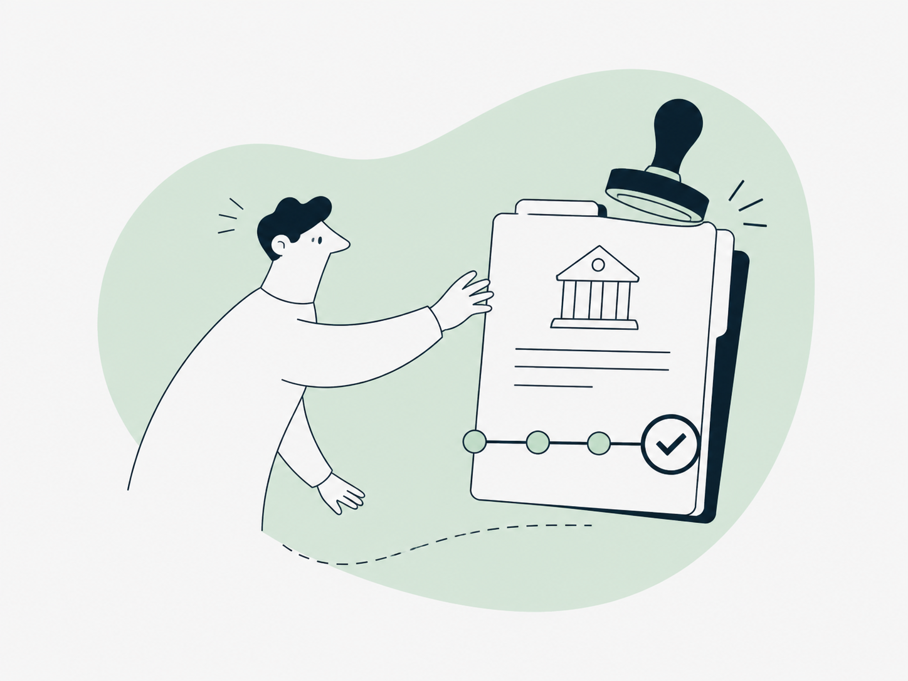
On a appris la réforme dans le journal, c'était trop tard
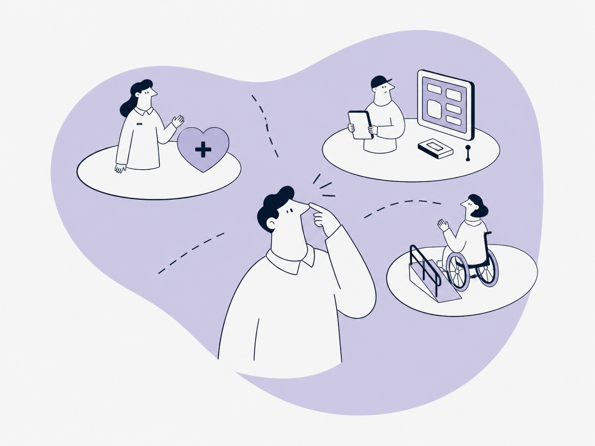
Ce qu'exprime la fédération ne représente pas nos intérêts
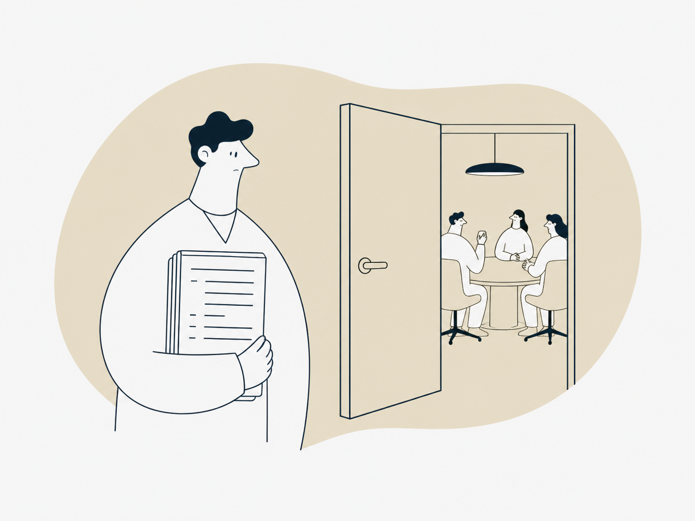
On n'a jamais été consulté alors qu'on est les premiers concernés
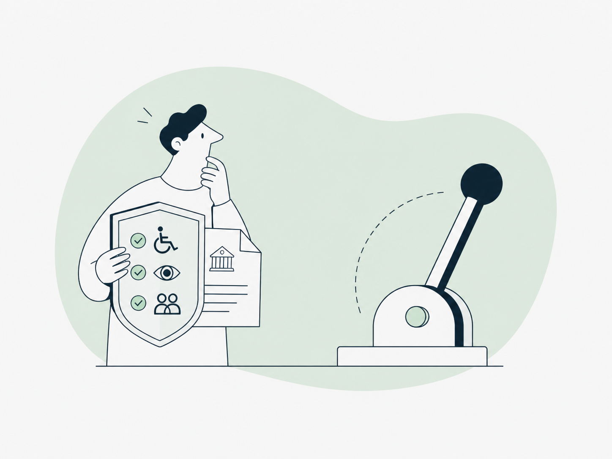
On aimerait que la loi change mais on sait pas comment s'y prendre
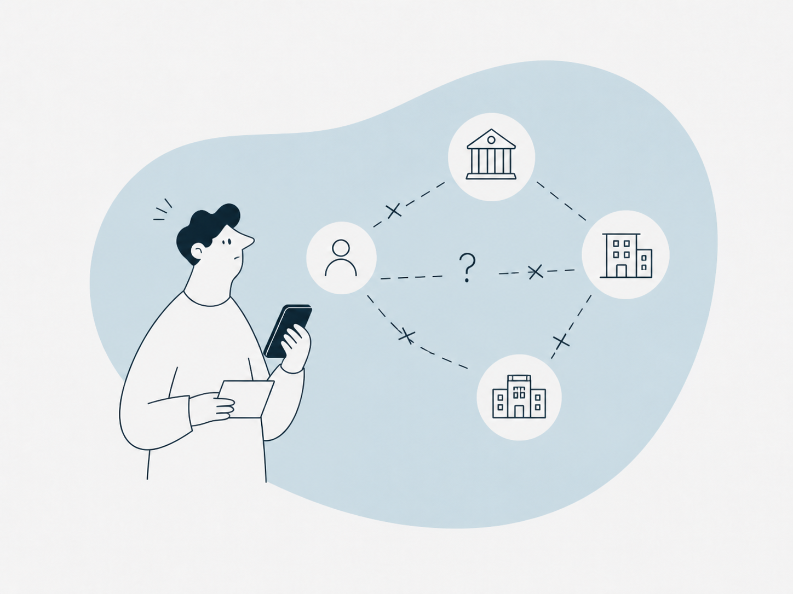
On n'a pas de contacts à l'Élysée, au Sénat, en région
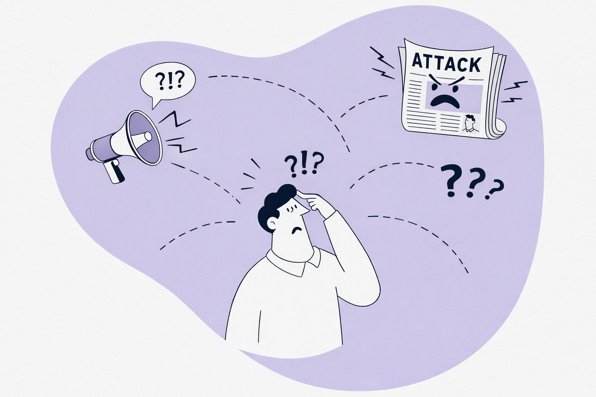
On a été attaqués dans la presse et on n'a pas su quoi dire
Par temps calme comme en période de crise, trois leviers d'influence articulés pour vous donner une longueur d'avance dans un contexte mouvant et complexe.
Avant qu’un texte soit déposé ou qu’un arbitrage soit rendu, nous savons déjà ce qui se prépare. Nous filtrons l’information et identifions les opportunités et les risques pour vous : réglementaires, politiques, médiatiques...
Nous clarifions votre position et la mettons sur la table des décideurs publics. Nous préparons et organisons les rencontres utiles avec les élus, les administrations, les cabinets, les coalitions, etc.
Chaque tribune, audition ou interview peut faire avancer votre dossier ou le freiner ; nous préparons vos prises de parole pour qu’elles servent à la fois votre stratégie et votre visibilité.
AleVia se distingue à la fois par son expertise sur les biens communs, ainsi que par ses engagements et ses valeurs.
Nos collaborateurs mettent à profit leurs expertises dans les domaines du droit, des politiques publiques ou encore de la communication pour faire la différence dans le domaine des biens communs.
Nous choisissons nos missions dans des domaines qui servent l’intérêt général.
Nous ne travaillons pas pour deux acteurs aux intérêts opposés. C’est plus de clarté pour nous, plus de crédibilité pour vous.
AleVia est déclarée au répertoire des représentants d’intérêts tenu par la Haute Autorité pour la transparence de la vie publique (HATVP), et s'engage à respecter les règles déontologiques fixés par la loi Sapin 2.
Contrairement à la plupart des cabinets, votre dossier sera géré par un interlocuteur unique. Nicole sera toujours dans la pièce.
Chaque mission est unique. Nous construisons ensemble une stratégie sur-mesure pour vous accompagner.
Plus de 35 organisations engagées sur les biens communs nous font déjà confiance.
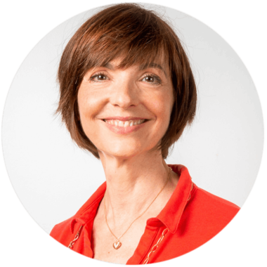
Avocate, journaliste puis déléguée générale d’organisation professionnelle, elle a passé des années au contact de celles et ceux qui décident. Elle met aujourd’hui cette expérience au service de vos dossiers pour qu’ils comptent dans les arbitrages publics.
Avocate au barreau de Paris pendant plusieurs années, titulaire du CAPA.
Journaliste de formation, rédactrice spécialisée pendant plusieurs années.
Déléguée générale d'organisation professionnelle pendant plusieurs années, au contact direct des arbitrages sectoriels.
Consultation gratuite, sans engagement.
Expliquez-nous en une phrase la situation qui vous préoccupe. Nous vous dirons rapidement si AleVia est le bon cabinet pour vous accompagner.